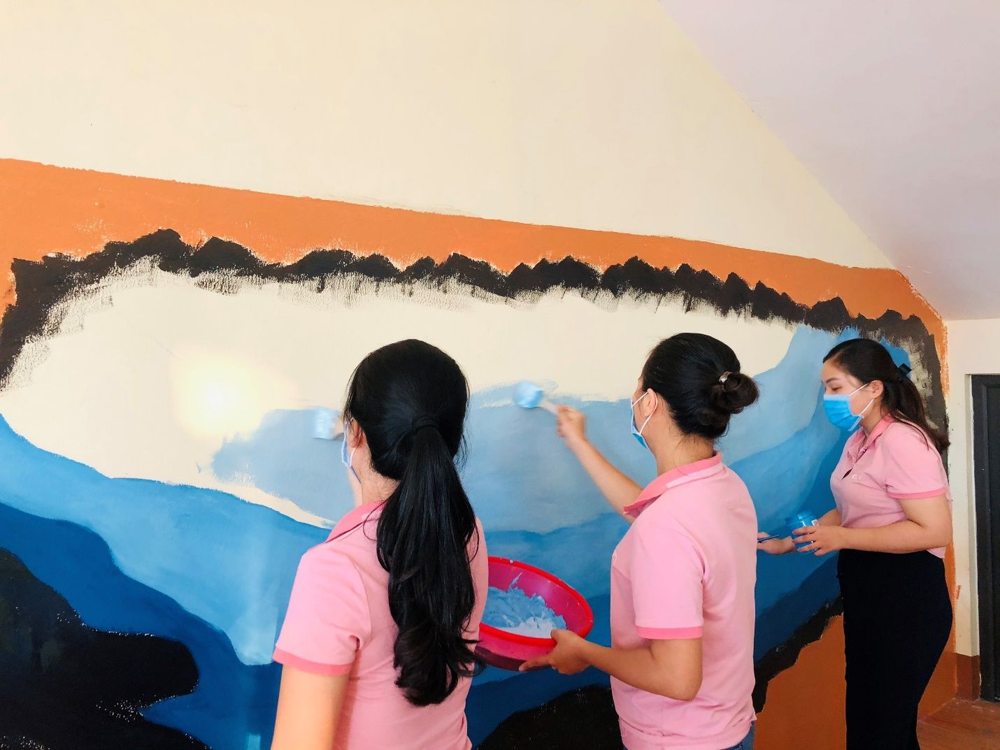
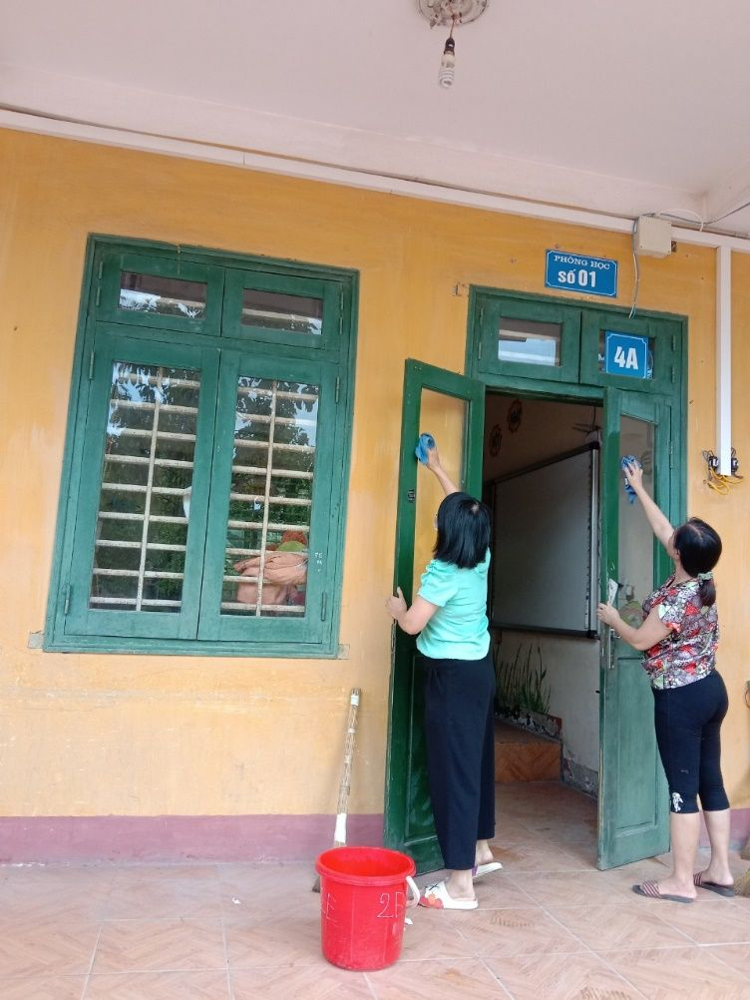
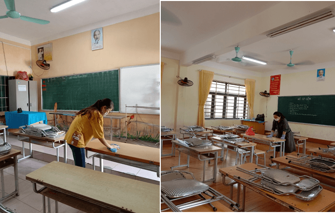

CÔNG TÁC CHUẨN BỊ CHO KHAI GIẢNG NĂM HỌC MỚI 2021 - 2022
Năm học mới đang đến gần, để chuẩn bị cho lễ khai giảng năm học 2021-2022, toàn thể CB, GV, NV Trường Tiểu học Nha Trang đã và đang thực hiện tốt công tác chuẩn bị như: tu sửa cơ sở vật chất, trang trí, vệ sinh môi trường, cảnh quan trường lớp, tập huấn, bồi dưỡng giáo viên, triển khai sách giáo khoa theo chương trình Giáo dục phổ thông 2018. Tất cả mọi công việc đều diễn ra như những năm trước.
Tuy nhiên, do tình hình dịch bệnh phức tạp, công tác chuẩn bị lễ khai giảng năm nay cũng có nhiều điều điều đặc biệt...
Tất cả mọi công việc phải diễn ra trong yêu cầu đảm bảo phòng chống dịch Covid-19. Thầy cô đến trường phải thực hiện tốt 5K. Bên cạnh đó, khi học sinh chưa thể đến trường thì các thầy cô phải tập huấn sử dụng các ứng dụng để tổ chức dạy học trực tuyến và đương nhiên, Lễ khai giảng năm học mới cũng sẽ trực tuyến.
Để chuẩn bị cho lễ khai giảng trực tuyến, nhà trường bắt tay ngay vào việc xây dựng video, hình ảnh, xây dựng phương án học sinh tham dự trực tuyến lễ khai giảng. Các thầy cô vẫn miệt mài tập luyện văn nghệ để có một chương trình khai giảng ý nghĩa với các em, giúp các em học sinh có một nguồn năng lượng lớn để bắt đầu năm học.
Sau đây là một số hình ảnh trong công tác chuẩn bị đón năm học mới 2021 -2022.
|  |
(Thầy cô trang trí trường, lớp)

|  | |
| (Thầy cô trang vệ sinh lớp học) |
Đưa tin: Nguyễn Thị Minh Huyền